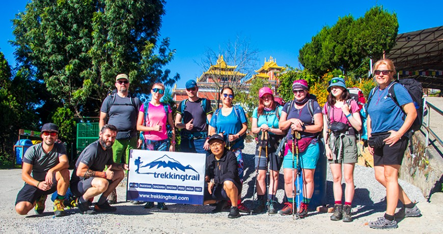

1. Champa Devi Hiking:
Located in the southwest hills of Kathmandu are the Champa Devi hiking trails. This fantastic jungle and forest hill hike in Kathmandu can be done in a half-day, making it perfect for you to enjoy the breathtaking views of the entire Kathmandu valley. Recorded as the third-highest hill at 2,285 m Champa Devi is also a famous pilgrimage site for Hindus and Buddhists. The trip starts with a short drive to Pharping; we begin to hike gradually upwards through incredible pine forests from here. The hiking trails are well-managed and bend around the hill, so the views are stunning. Finally, in a good 2 hours of easy hiking in Kathmandu, you reach the top of the mountain and can enjoy the views of the Langtang range. On clear days, even parts of the central and western Nepalese Himalayas.
You can combine Changragiri and Champadevi Hill as Chandragiri Champadevei Hiking.
Trekking
2. Chandragiri Hiking:
Graded as one of the best hiking trips in Kathmandu, Chandragiri hiking makes a perfect one-day hike in the Kathmandu Valley. The incredible Hindu temple of God Shiva on top of the hill is a major attraction to foreigners and nationals alike. The hill summit of Chandragiri is also made accessible via cable car, making the Chandragiri hiking unique with a cable car ride down overlooking the entire city. The hike itself to Chandragiri is easy-going and on good roads and trails.
View from Chandragiri Champadevi Hike
The trail goes past the iconic villages of Mache Goan, known as Fish Town, and has a pilgrimage temple dedicated to fish and is part of a national festival that is only celebrated once per year near August-September. We leave roads behind and follow the natural and uphill trail through forests and open ridges. Perfect for one-day trips in Nepal to spend an extra day enjoying the beautiful views of the Kathmandu Valley. Chandragiri Hiking can get crowded on Saturdays as many locals spend their free days visiting this incredible hilltop in Kathmandu. After enjoying the views and visiting the temple, you can either choose whether to hike back down or take a cable car straight to Thankot, where transportation awaits.
3. Ranikot Village Hiking:
The Ranikot hiking trip of one day in Kathmandu takes you through the traditional Newari villages and fantastic nature trails. This adventurous hiking trip in Nepal goes off the beaten path, allowing for less crowded paths and more untouched landscapes during this one-day hike. Depending on the season, different flora and fauna make your Ranikot hiking mesmerizing. This hike can be done all year round but is not best during the monsoon rainfalls. With off-the-beaten trails during the rainy season, this hike can become a slippery challenge! Ranikot hiking starts from the Bhaktapur town of Suryabinak and passes through the Ranikot Hill Pass to Panauti, a traditional and historic Newari village. From Ranikot, you can also experience an incredible view of the Kathmandu Valley and some Himalayan snow-topped mountains. Do you want to spend your day hiking to old traditional villages on pristine nature trails, Then the Ranikot hiking is definitely for you! Want to spend the night in an old traditional house?
You can even go to the Ranikot Village Hiking in Kathmandu for two days and overnight to see an incredible sunrise.
Ranikot Village Hike
4. Kakani Hiking:
Famed for its strawberry and kiwi harvest during February and April, Kakani hiking in Kathmandu is a mix of cultural and natural outdoor activities in Nepal. Marked as the entrance to the Langtang Valley, Kakani is also a famous point for trekkers heading into Langtang. Filled with charming and traditional houses, the village itself is also a cultural experience. When coming in season, the locals prepare fresh strawberry brandy and dishes to highlight a successful harvest, and visitors at that time can enjoy all the local delicacies. The Kakani hike goes through incredible and beautiful forest trails in the Shivapuri National Park. After a good 4 to 5 hours of hiking, we reach a village called Budhanilkanta, where an ancient Hindu temple is waiting for you. The views during Kakani hiking in Kathmandu are also impressive, and besides nature, the views of the Ganesh Himal, Langtang Valley, and the Manaslu ranges are breathtaking. See traditional villages, explore jungle trails, and enjoy the pictures with the Kakani Hiking; the best one-day hike in Kathmandu!
5. Namo Buddha Dhulikhel Hiking:Read more at: https://www.trekkingtrail.com/blog/15-hiking-trips-in-kathmandu.html